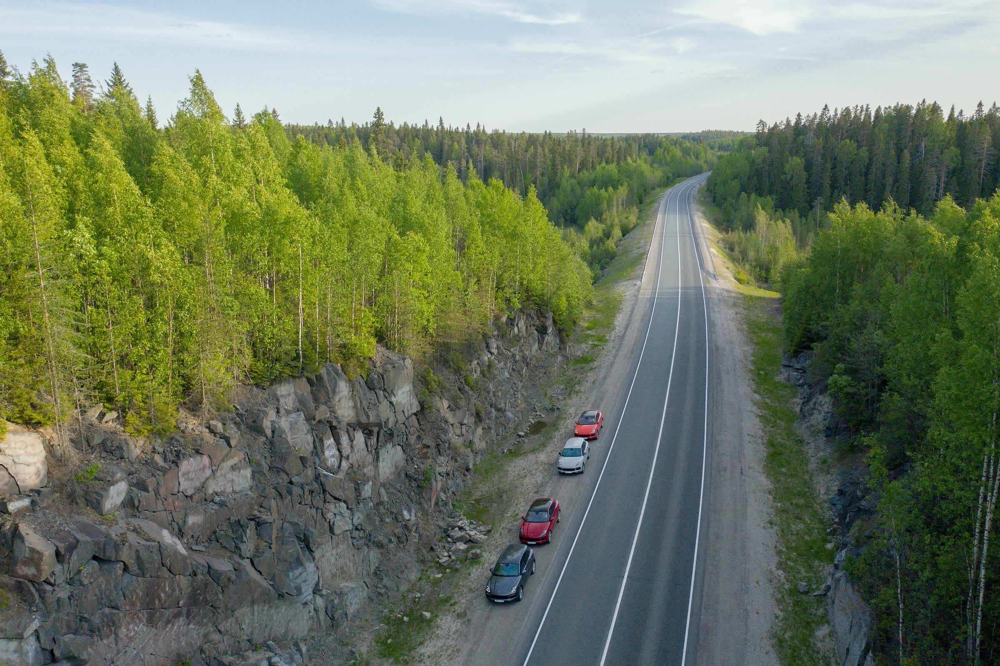
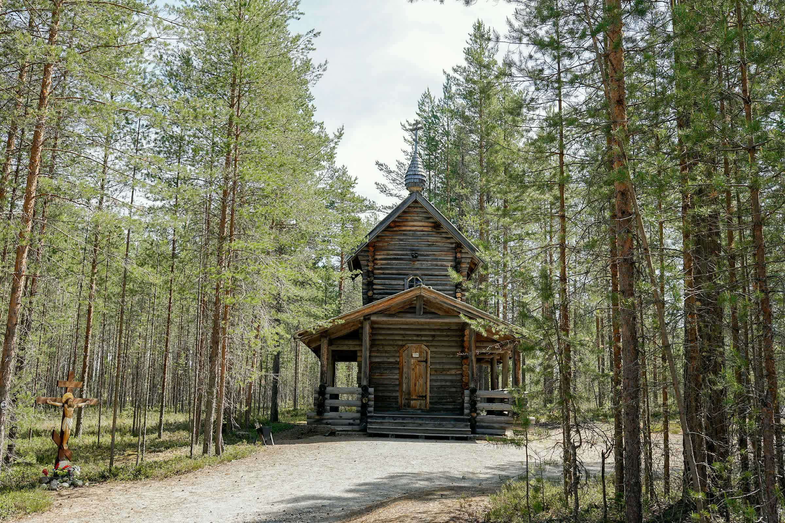
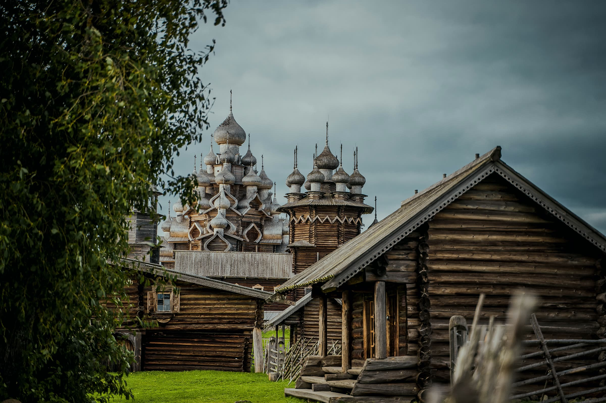
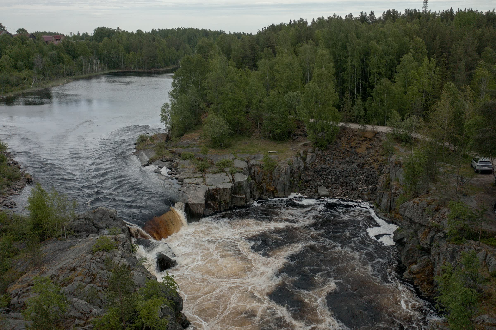
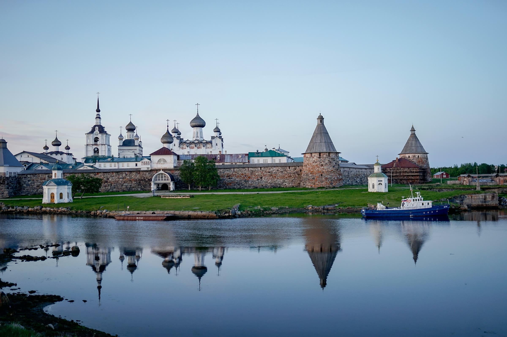
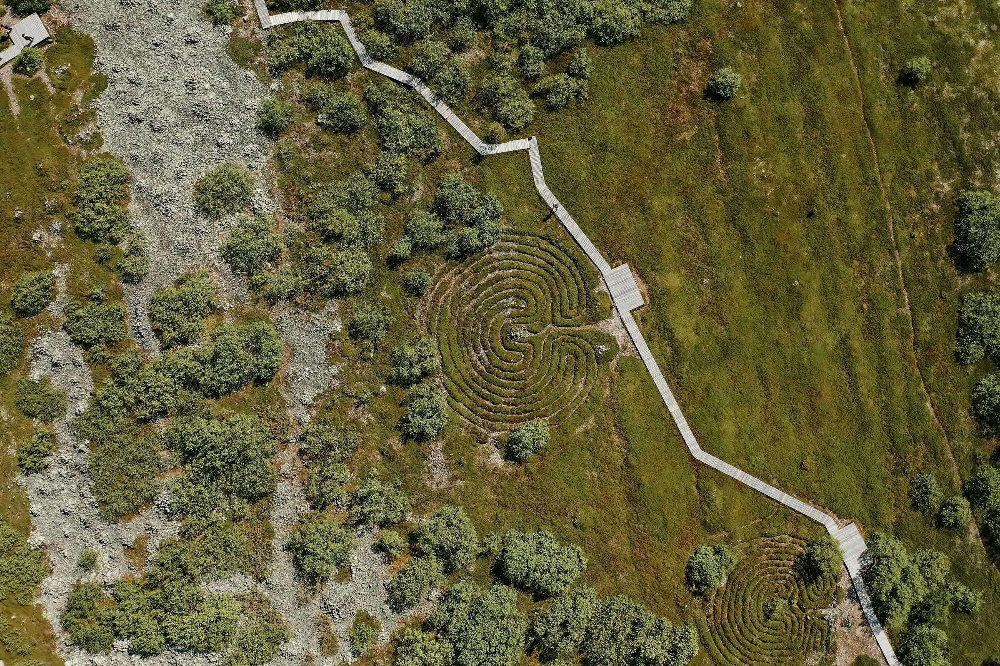

2 заезда · в машине 2 участника
Выберите заезд
-
4–8 июня
Продан
Спросить про другие даты -
11–15 июня
Идёт набор экипажей
Забронировать место
Что входит в стоимость
Всё включено — от трансфера до бани
Вы покупаете только билеты до Петрозаводска. Машина, отели, еда, экскурсии и команда сопровождения уже в программе. Стоимость пришлём вместе с ней.
- 5 дней за рулём Cayenne, два участника в машине
- Экскурсионное сопровождение на всём маршруте
- 2 ночи в «Karelia Family Club», Медвежьегорск
- 2 ночи в «Островито Морюшко», Большой Соловецкий остров
- Кижский погост
- Мраморный карьер «Белая Гора»
- Сооружения Беломорско-Балтийского канала
- Соловецкий монастырь с гидом, прогулка на лодках
- Пикники на природе
- Завтраки, обеды и ужины каждый день
- Страхование жизни, здоровья и багажа
Не входит: Билеты до Петрозаводска и обратно.
Программа
5 дней, 1250 км

-

День 1 За рулём
Карелия
Петрозаводск → Марциальные воды → Белая Гора → Медвежьегорск
- Брифинг по безопасности
- Церковь Апостола Петра в Марциальных Водах
- Пикник у Поор Порога
- Мраморный карьер «Белая Гора»
- «Karelia Family Club», карельский ужин
-

День 2 За рулём
Кижи
Медвежьегорск → Оятевщина → о. Кижи
- Замок «Кархумяки»
- Переправа на Кижский погост
- Обед в крестьянском доме
- Баня и ужин из дичи и онежской рыбы
-

День 3 За рулём
Беломорканал
Надвоицы → Повенец → Кемь → Соловки
- Первые шлюзы Беломорско-Балтийского канала
- Обед у водопада Воицкий падун
- Никольская церковь в Повенце
- Катер на Большой Соловецкий остров
-

День 4
Соловки
Монастырь → Секирная гора → Савватиевский скит
- Соловецкий монастырь с гидом
- Музей ГУЛАГ, Секирная гора
- Пикник у Красного озера
- Лодки по каналам острова
-

День 5 За рулём
Возвращение
Заяцкий остров → Кемь → «Шуйская Чупа»
- Заяцкий остров и древние лабиринты
- Катер в Кемь
- Переезд в резиденцию «Шуйская Чупа», ужин
- Трансфер в Петрозаводск
Почему это стоит своих денег
Что будет, если…
- …на Белом море начнётся шторм
- Готов план Б и план В: другой маршрут, другая точка, тот же уровень. Поездка не срывается.
- …вы не ездили так далеко за рулём
- Маршрут разбит на удобные отрезки с остановками, рядом инструкторы. Можно меняться за рулём.
- …машина откажет в дороге
- За колонной идёт техподдержка. Обычно машина снова в пути через 15–30 минут.
- …захочется глубже понять историю
- Весь маршрут ведут гиды: от петровских Марциальных вод до Соловецкого монастыря.
Договор с туроператором, а не с частным гидом
- РТО 024756в Едином федеральном реестре туроператоров — проверить
- С 2019 годавозим экипажи по 27 регионам России
- РГОмаршруты на Байконур и Соловки аккредитованы Русским географическим обществом
- РСТчлен Российского союза туриндустрии с 2021 года
О наших турах писали РБК Стиль, Lenta.ru, «Ведомости», «Колёса», The Voice и журнал РГО.
Пришлём программу и стоимость
Три вопроса — и Виктория подготовит программу под ваш заезд.
Частые вопросы
Что не входит в стоимость?
Билеты до Петрозаводска и обратно. Встречаем и провожаем в аэропорту Петрозаводска — трансфер включён.
Можно поехать одному или втроём?
Программа рассчитана на машину с двумя участниками. Для другого состава Виктория подберёт вариант.
Нужен ли опыт дальних поездок за рулём?
Нет. В первый вечер проводим брифинг по безопасности, маршрут проверен командой заранее, рядом с колонной едет техподдержка.
Как бронировать и платить?
Заключаем договор с туроператором из федерального реестра (РТО 024756). Условия оплаты и отмены прописаны в договоре — пришлём его вместе с программой.
Можно забронировать весь заезд для своей компании?
Да. Выберите «Группа от компании» в форме выше или позвоните: +7 (921) 891-19-11.